These notes provide a brief introduction to the Bethe-Salpeter (BS) formalism outlining the most important equations involved in the theory. The approach used to compute the BS kernel and the macroscopic dielectric in an implementation based on planewaves and norm-conserving pseudopotentials is also discussed.
The conventions used in the equations are explained in the Many-body theory notes (theorydoc_mbt). A much more consistent discussion of the theoretical aspects of the Bethe-Salpeter equation can be found in [1].
Before discussing the Bethe-Salpeter problem, it is worth reminding some basic results concerning the ab initio description of optical properties.
In frequency and reciprocal space, the microscopic dielectric function is related to the irreducible polarizability by the following relation
The macroscopic dielectric function, єMLF(ω), can be directly related to the inverse of a single element, the first (G1=0,G2=0), of the inverse of the microscopic dielectric matrix by means of:

Note that above equation differs from

In the GW_notes, we have discussed how to calculate the irreducible polarizability and thus the absorption spectrum within the random phase approximation (RPA). It turns out, however, that the RPA dielectric function evaluated with Kohn-Sham orbitals and eigenvalues yields absorption spectra that are in quantitative, and sometimes even in qualitative, disagreement with experiments. This is not surprising since the polarizability of the Kohn-Sham system is not expected to reproduce the response of the fully interacting system.
Important discrepancies with experiment are found even when the DFT gap is corrected by replacing the KS eigenvalues by quasiparticle energies calculated in the GW approximation. This indicates that, as far as optical properties are concerned, there is some important physics that is not correctly captured by the GW approximation.
The fundamental reason for the failure of the RPA can be traced back to the neglect
of the electron-hole interaction that, in the many-body language, should be included through the vertex function.
Replacing the vertex function with a local and instantaneous function is a too crude and
unrealistic approximation for the many-body polarizability.
In the next section we will discuss how to obtain an improved approximation for the vertex
and therefore an improved approximation for the polarizability that takes into account many-body effects
due to the electron-hole interaction
Go to the top
A schematic picture of the different levels of the description of optical spectra available in ABINIT is given below.

The Bethe-Salpeter theory is formulated in terms of two-particle propagators. These are four-point functions describing the motion through the system of two particles at once. We will label them L0 and L, where the subscript zero indicates that the particles are non-interacting. By restricting the starting and ending point of the particles, the two-point contraction of L0 gives the reducible independent-particle polarizability according to

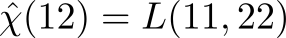
that should not be confused with the irreducible polarizability of the many-body system (denoted with a tilde in the formulas in the GW_notes). The utility of working in terms of the reducible quantities is that the macroscopic dielectric function with local field effects is obtained directly from the reducible polarizability using

Computing the reducible L directly, if possible, thus allows one to avoid the costly matrix inversion of the dielectric function that should otherwise be performed for each frequency.
One can show that L satisfies the Dyson-like equation:
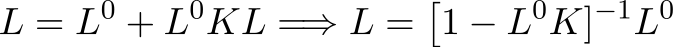
that involves the Bethe-Salpeter kernel K: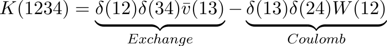
where the bar symbol signifies that the Coulomb interaction has to be taken without its long-range Fourier component at G=0: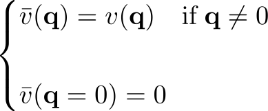
As discussed in [1], local field effects (LF) are included in the formalism through the exchange term while the Coulomb term describes the screened electron-hole interaction that is responsible for the creation of the excitons. All interaction is in principle already contained in W, and the rewriting of the kernel in this way is mostly an algebraic trick which allows one to easily separate the contributions and calculate the optical spectrum both with and without the LF.
The Dyson-like equation for L becomes a matrix problem once a particular basis set is chosen to expand the four-point functions involved in the problem. In the standard approach, the polarisabilities and the BS kernel are expressed in the so-called transition space (i.e. as products of single-particle orbitals) using:
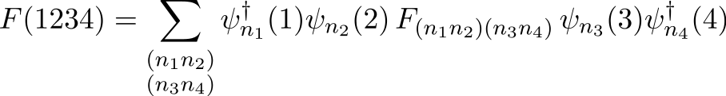
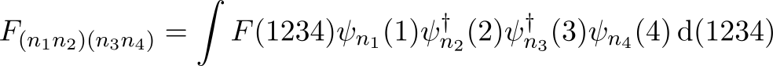
where ni is a shorthand notation to denote band, k-point and spin index. The expansion is exact provided that the set of single-particle orbitals from a complete basis set in the Hilbert space.The main advantage of using the transition space for solving the problem is that the RPA polarizability is diagonal in this representation

After some algebra (see [1] for a more complete derivation) one finds that, in a system with an energy gap, the Dyson-like equation for L can be expressed in terms of an effective two-particle Hamiltonian, H, according to
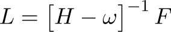
The explicit form for H and F in the transition space is given by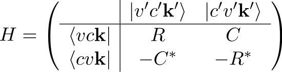

The inclusion of spin in the formalism would require an extensive discussion on its own. Here, for simplicity, we limit the analysis to the case of spin unpolarized semiconductors (nsppol=1). In this particular case, the matrix elements of the resonant block are given by

The matrix elements of v and W are defined as:
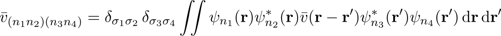
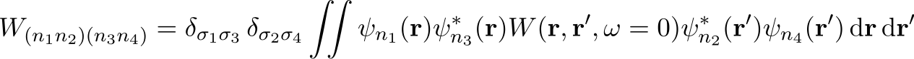
Note, in particular, that only the static limit (ω = 0) of W is involved in the last expression.The coupling matrix elements are usually smaller than the resonant ones. This is especially true in bulk systems due to the different spatial behavior of conduction and valence states. In solid state calculations, it is therefore common practice to ignore the C block (the so-called Tamm-Dancoff approximation). Under this assumption the excitonic Hamiltonian is given by a Hermitian operator.

The macroscopic dielectric function is obtained by contracting the many-body L and then taking the optical limit of the G=G'=0 component along a particular direction in q-space. The final result reads:

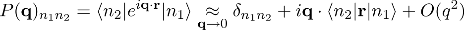
is the matrix element of the dipole operator in transition space.
By default the code calculates the macroscopic dielectric function taking the limit along
six different directions in q-space (the three basis vectors of the reciprocal lattice and the three Cartesian
axis). It is possible to change the default directions using the variables
gw_nqlwl and gw_qlwl.
Go to the top
At this point it is clear that the evaluation of the macroscopic dielectric function within the BS formalism is a two-step process:
The flowchart of a typical Bethe-Salpeter run is schematically depicted in the diagram below:

The KSS file is represented with an ellipsis. The path on the left indicated with blue arrows represents the RPA calculation (optdriver=3) that produces the SCR file (see also the first lesson of the GW tutorial). Once the KSS and the SCR file are available, we can finally contruct the Hamiltonian and solve the Bethe-Salpeter problem (the rectangle at the bottom of the flowchart).
For BS computations, it is common practice to simulate the self-energy corrections by employing the scissors operator whose value can be obtained either from experiments or from ab-initio calculations. The scissors operator allows one to avoid a costly GW calculation that should performed for all the k-points and bands included in the transition space (the optional path on the right indicated with yellow arrows that corresponds to optdriver=4).
The construction of the Hamiltonian matrix represents a significant portion of the overall CPU time due to the large number of transitions needed for an accurate description of the frequency-dependence of the polarizability. On the other hand, also the calculation of the macroscopic dielectric function poses numerical difficulties since an expensive matrix inversion should be performed for each frequency.
The code implements different methods proposed in the literature to avoid the matrix inversion for each frequency. The variable bs_algorithm is used to select among the different possibilities.
bs_algorithm=1 employs standard (Sca)LAPACK routines to obtain the spectral representation of H in terms of eigenvalues and right eigenvectors of H:


bs_algorithm=2 avoids the diagonalization using an iterative algorithm that constructs a basis set in which H is represented by a real symmetric tridiagonal matrix [3]. Without entering into detail, one can schematically represent the Haydock technique as an algorithmic procedure that transforms a dense (hermitian) matrix into a sparse (tridiagonal) one:

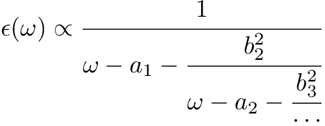
where a small complex shift, defined by zcut, is used to avoid the singularities along the real axis. The number of iteration required to converge is almost independent on the size of the problem, usually of the order of 100-200 iterations. The algorithm involves simple matrix-vector multiplications that are efficiently performed with BLAS calls and, most importantly, are easy to parallelize. Another distinct advantage is that the Haydock method is less memory demanding than the direct diagonalization since only three temporary vectors are required instead of the full set of eigenvectors.Note that the original formulation of the method presented in [3] assumes an Hermitian operator thus it can be used only for TDA calculations. We refer the reader to [4] for a generalization of the method to the case in which the coupling term cannot be neglected. The main drawback of the method is that it does not give direct access to the excitonic spectrum hence it cannot be used to calculate binding energies or to plot the excitonic wavefunctions. Moreover, for the time being, bs_algorithm=2 cannot be used for calculations in which the coupling term is included.
bs_algorithm=3 employs the conjugate-gradient method
to calculate the lowest eigenstates of the Hamiltonian.
At present, this method is still under testing and does not support calculations with the coupling term.
Go to the top
Our implementation employs planewaves to expand the periodic part of the Bloch states, u, and the two-point function W(r,r') that becomes a q-dependent matrix in reciprocal-space. The conventions used for the transforms are documented in this section of the GW notes.
The matrix elements of the exchange term are evaluated in reciprocal space using:


The input variable bs_exchange_term can be used to disable the computation of the exchange term, this option is mainly used for performing optical calculations without local field effects. The variable bs_coulomb_term governs the computation of the Coulomb term, the most CPU-demanding part due to the presence of the double sum over G-vectors.
It is also important to stress that, in the two equations above, the k-point index runs over the full Brillouin zone hence the size of the Hamiltonian is defined by the number of point in the full Brillouin zone and not by the number of points in the irreducible wedge.
The accurate calculation of optical properties require the correct treatment of the optical limit (G=0, q → 0) of the oscillator matrix elements. The computation of these terms deserves some clarification, due to the presence of the fully nonlocal pseudopotential term in the Kohn-Sham Hamiltonian.
A linear expansion up to the first order in q of the oscillator matrix element results in:
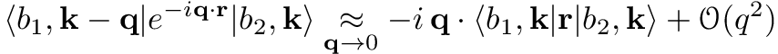
where we have assumed b1 ≠ b2 and the difference between the two wave functions at k-q and k has been neglected because it only introduces terms that are quadratic in q.Unfortunately, the above expression cannot be directly used because the matrix elements of the position operator are ill-defined when wavefunctions obey Born-von Karman periodic boundary conditions. For this reason, the first order contribution has to be evaluated using the equivalent expression [5]

The role played by this additional term is usually marginal in the case of GW calculations: the QP corrections are obtained by performing an integration in q-space and only the q → 0 component of the inverse dielectric matrix is affected by the commutator of the non-local part of the pseudopotential.
For this reason it is common practice, especially during the GW convergence tests, to neglect this contribution by setting inclvkb=0. Strictly speaking, however, this approximation is justified only in the case of calculations in bulk crystals provided that the BZ sampling is well converged. Particular care has to be taken when performing GW calculations in non-periodic systems due to the reduced dimensionality of the BZ.
Please note that the commutator of the nonlocal part should ALWAYS be included
when studying optical properties, both at the RPA and at the BS level.
We suggest the use of inclvkb=2 that is
faster and less memory demanding than the algorithm coded for
inclvkb=1.
Go to the top